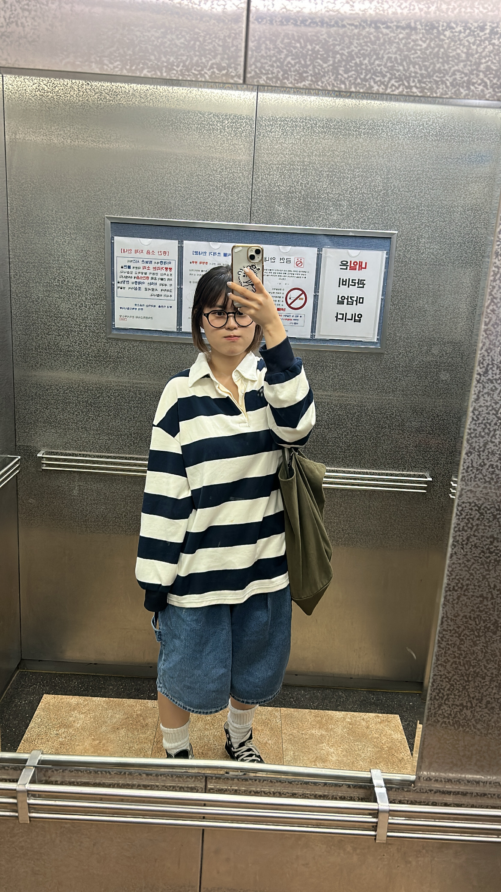

ARCHIVE
Daily Look
Daily Look
at
32.8
32.8

미란정은과 또순이!
[at 32.8] Y2K가 지는 별이란다. 아니? 언제나 우리 마음 속에 함께하고 있는 별이 아닐까.. 추억의 윤희언니를 불러오는 짜릿한 룩! 가을이 지나기 전에 반바지를 많이 많이 입어놔야 한다. 스트라이프 티셔츠가 살짝 부해보여서, 평소에 많이 입는 팬츠를 그냥 매치해 주면 자칫 너무 부해보이기도 하고ㅠ 무드가 애매해진다.. 그래서 이렇게 대놓고 재밌는 팬츠와 매치를 해준다면 good ! :) 큰 핏을 종아리에서 끊어주기 때문에 말라보이는 효과까지 얻을 수 있다.
[at 32.8] Y2K가 지는 별이란다. 아니? 언제나 우리 마음 속에 함께하고 있는 별이 아닐까.. 추억의 윤희언니를 불러오는 짜릿한 룩! 가을이 지나기 전에 반바지를 많이 많이 입어놔야 한다. 스트라이프 티셔츠가 살짝 부해보여서, 평소에 많이 입는 팬츠를 그냥 매치해 주면 자칫 너무 부해보이기도 하고ㅠ 무드가 애매해진다.. 그래서 이렇게 대놓고 재밌는 팬츠와 매치를 해준다면 good ! :) 큰 핏을 종아리에서 끊어주기 때문에 말라보이는 효과까지 얻을 수 있다.
color